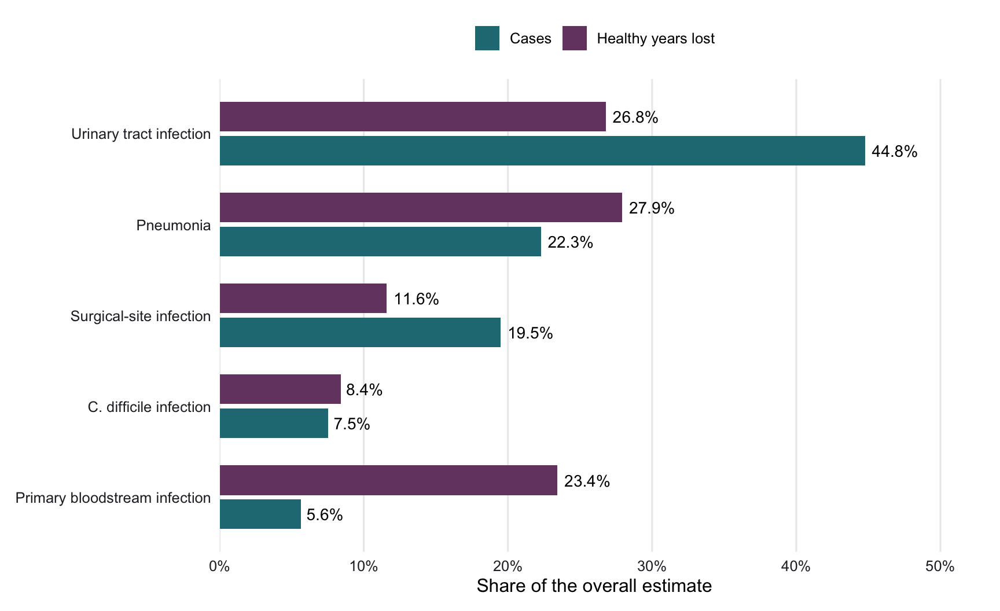

Does more common mean more harmful?
Imagine you are looking at a hospital’s infection statistics. One type of infection appears far more often than the others. Should it automatically receive the most attention?
Counting infections is a useful starting point, but it leaves out what happens to patients afterwards. An infection that occurs less frequently can still cause substantial harm through serious illness or premature death. Understanding this difference matters when interpreting health statistics and discussions about prevention.
A study by Zacher et al. (2019) explored this issue using five common healthcare-associated infections in Germany. Its findings offer a useful lesson: to understand the impact of infections, we need to consider both how often they occur and how much healthy life is lost.
Looking beyond the case count
To compare these consequences, the researchers used disability-adjusted life years, or DALYs. One DALY represents the equivalent of one year of healthy life lost. The measure combines years lost through premature death with time spent in poorer health, weighted by its severity.
This gives us two different questions:
- Cases: How often does an infection occur?
- Healthy years lost: How much health loss does it cause across the population?
The study drew on the European Centre for Disease Prevention and Control’s hospital survey conducted in 2011–2012. The representative German sample included 9,626 patients from 46 hospitals.
The researchers combined this snapshot with information about hospital stays, infection duration and hospital discharges to estimate annual cases. They then used disease-progression models to estimate deaths and healthy years lost, accounting for patients’ age, sex and underlying illness.
The results describe estimated infections occurring in Germany in 2011. They are not current infection counts.
The most common infections did not dominate every measure
The contrast becomes clear in Figure 1. Urinary tract infections accounted for about 45% of estimated cases, but approximately 27% of estimated healthy years lost.
Primary bloodstream infections showed the opposite pattern: they accounted for only about 6% of cases, yet approximately 23% of healthy years lost.
Together, pneumonia and primary bloodstream infections represented approximately 28% of cases but 51% of healthy years lost, using the reported point estimates. Their impact would be easy to underestimate if we looked only at infection counts.
This does not mean urinary tract infections are unimportant. Their frequency still contributed to a large total health burden. Rather, the comparison shows why a single measure cannot capture every aspect of the problem.
How large was the overall burden?
The differences between infection types sit within a substantial overall burden. Table 1 summarises the study’s estimates for all five types combined: pneumonia, primary bloodstream infection, urinary tract infection, surgical-site infection and Clostridioides difficile infection.
| Measure | Estimated total | 95% uncertainty interval |
|---|---|---|
| Infection cases | 478,222 | 421,350–537,787 |
| Deaths attributable to the infections | 16,245 | 10,863–22,756 |
| Healthy years lost (DALYs) | 248,920 | 178,693–336,239 |
These are modelled estimates, rather than a direct count of every infection and death. “Attributable deaths” refers to deaths estimated to result from the infections, rather than all deaths among patients who had an infection.
The intervals show how uncertain the estimates are under the model. For example, the estimated loss of healthy life was approximately 249,000 years, with a 95% uncertainty interval spanning roughly 179,000 to 336,000. Reading the central estimate alongside this range gives a more honest picture than treating it as an exact total.
What these numbers cannot tell us
Before turning these findings into prevention priorities, we need to recognise their limits.
First, the estimates concern 2011. They cannot tell us Germany’s infection burden today, or an individual patient’s current risk. The analysis also covered five infection types, rather than every healthcare-associated infection.
Second, the estimates depend on assumptions about how infections progress and affect patients’ lives. Some supporting evidence was limited. Information about underlying illness from European patients was applied to Germany because the relevant German data were unavailable. These assumptions can influence estimated health loss.
Finally, a high burden does not automatically identify the best prevention programme. That decision also requires evidence about how many infections can be prevented, whether an intervention works and what it costs to implement.
The takeaway: ask what is being counted
Are the most common hospital infections also the most harmful? Not necessarily: their shares of cases and healthy years lost can differ substantially.
In this study, urinary tract infections dominated case numbers, while pneumonia and primary bloodstream infections together accounted for about half of estimated health loss. Looking at both measures makes that contrast visible.
For readers of health statistics, the useful habit is to ask: does this number describe how often a problem occurs, or the consequences it has? Case counts matter, but understanding their human impact requires looking beyond the count.
Reference
Zacher, B., Haller, S., Willrich, N., Walter, J., Abu Sin, M., Cassini, A., Plachouras, D., Suetens, C., Behnke, M., Gastmeier, P., Wieler, L. H., & Eckmanns, T. (2019). Application of a new methodology and R package reveals a high burden of healthcare-associated infections (HAI) in Germany compared to the average in the European Union/European Economic Area, 2011 to 2012. Eurosurveillance, 24(46), 1900135. Read the original study.